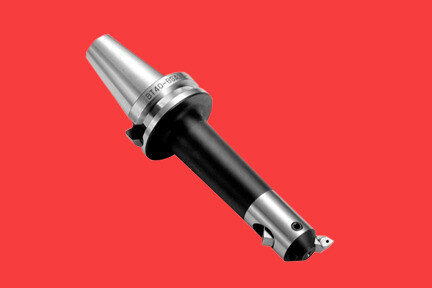
Milling Arbors (FMA / FMB / FMC)
Precision arbors for secure cutter mounting across FMA, FMB and FMC configurations on milling machines.
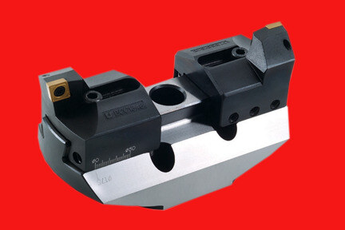
T-Slot Cutter
Precision cutters built to machine clean T-slot profiles into fixture plates and machine tables.
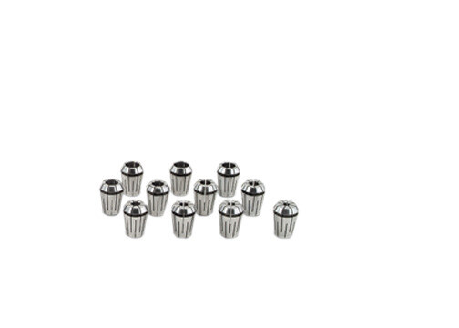
Side & Face Milling Cutters
Dual-edge cutters engineered for simultaneous side and face milling operations with a consistent finish.
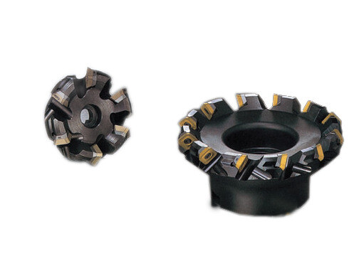
Face Milling Cutters
Built for flat surface finishing passes, delivering a consistent, repeatable face finish.
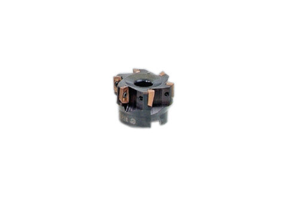
Milling Cutters
General-purpose milling cutters for slotting and profiling work across a range of milling machines.
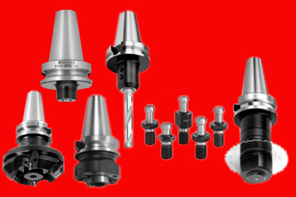
Milling Machine Tool Adapter
Adapters engineered to secure cutting tools precisely to the milling machine spindle.
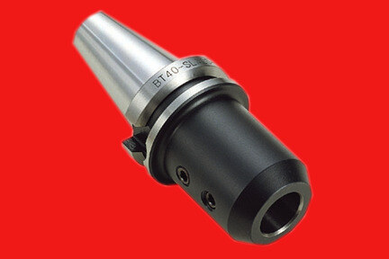
Milling Machine Tool Adapter — Round Shank
Round-shank variant of our spindle adapter, machined for a consistent, repeatable running fit.
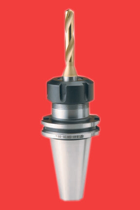
End Mills
Precision end mills for slotting, contouring and profile milling operations.
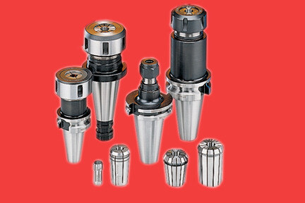
End Mills — Extended Length
Longer-reach end mill configuration for deep slotting and cavity work where clearance is limited.
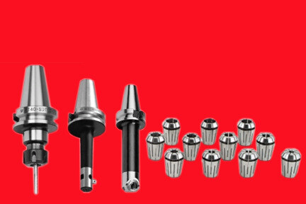
End Mills — Stub Length
Short, rigid stub-length end mill for maximum stability on shallow, high-load cuts.
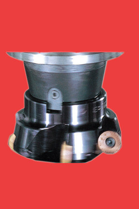
Rough Boring Bar — Square Shank
Built for heavy stock removal in bore roughing operations, with a rigid square-shank profile for stability.
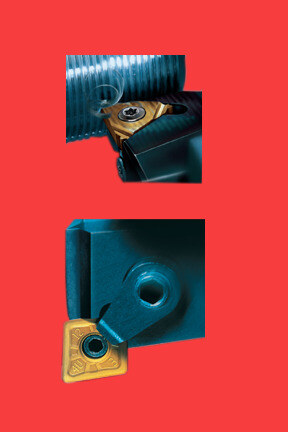
Rough Boring Bar — Round Shank
Round-shank version of our roughing bar, suited to round-bore tool posts and sleeve-mounted setups.
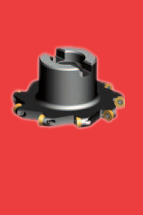
Miniature Boring Bar — P-Type
Slender-profile P-Type bar engineered for small-diameter internal boring where clearance is tight.
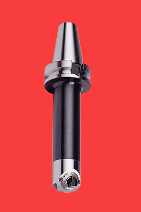
Miniature Boring Bar — S-Type
S-Type holder configuration of our miniature boring bar, for fine internal finishing passes.
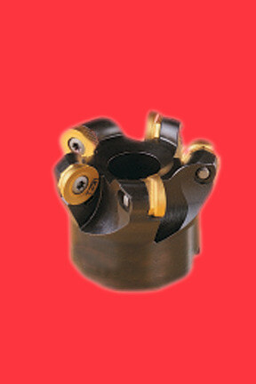
Back Boring Tools
Back recess tooling for machining relief features from the reverse face of a bore in a single setup.
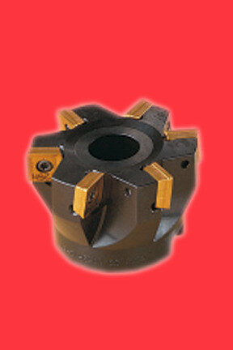
Chamfering Tool
Purpose-built for clean edge-break and chamfer operations on bore openings and component edges.
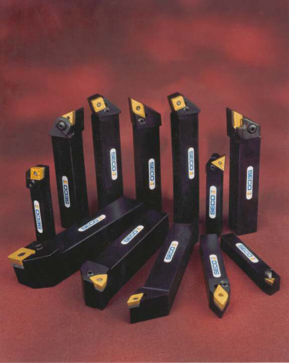
Turning Tool — External & Internal
Indexable turning holders covering both external and internal profiling operations.

External Turning Tool — Square Shank
Dedicated external turning holder for consistent OD profiling and facing passes.
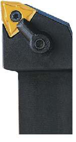
External Turning Tool — M-Type
M-Type holder configuration for external turning, matched to a wider range of ISO insert geometries.
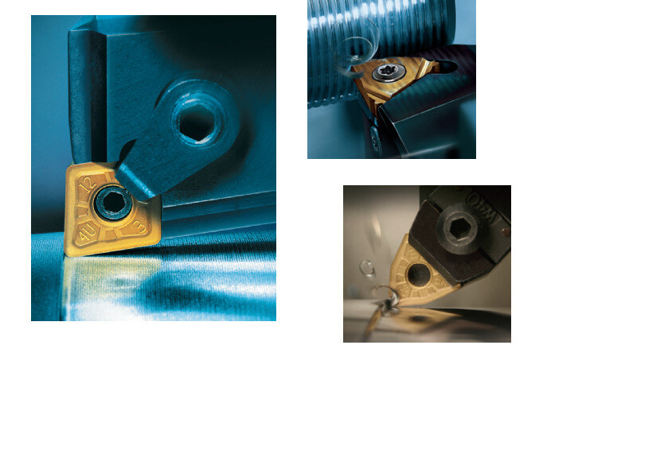
Internal Turning Tool — Round Shank
Internal profiling holder built for consistent bore-side turning operations.
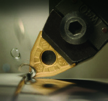
Internal Turning Tool — S-Type
S-Type internal holder for bore profiling in tighter internal diameters.
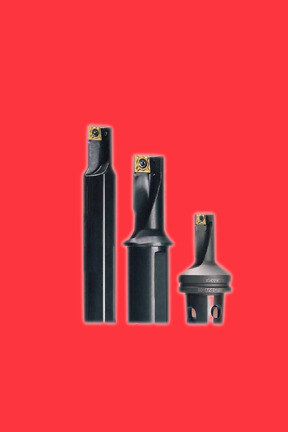
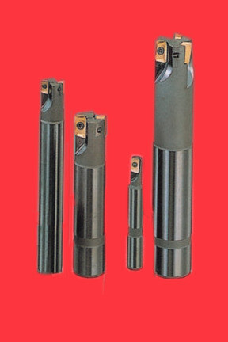
Twin Edge Tool
Dual-edge cutting tool designed to extend insert life and reduce tool-change frequency.
Parting & Face Grooving Tool Holder
Dedicated holder for parting and face grooving operations, part of our threading & grooving tooling range.
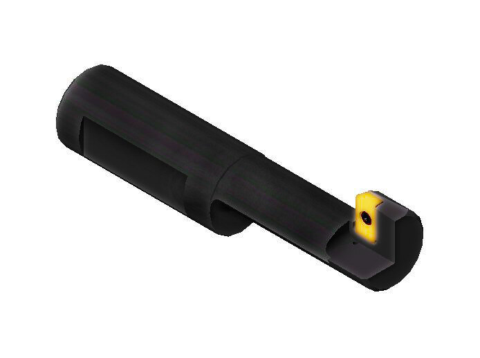
Tailor Made Combination Boring Bar — 01
Fully custom combination boring tooling, engineered to your component drawing for milling & turning centers and SPMs. Our core speciality.
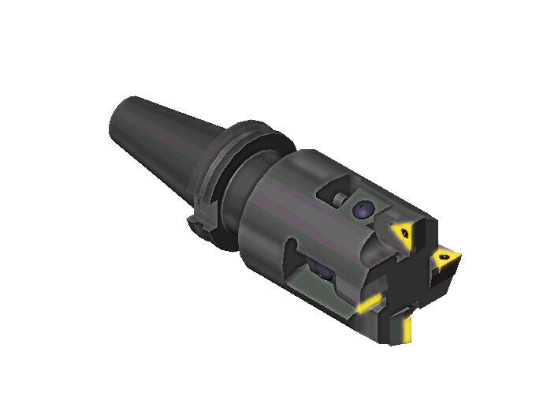
Tailor Made Combination Boring Bar — 02
A second real configuration from our combination tooling range — built around a specific component's boring and facing requirement.
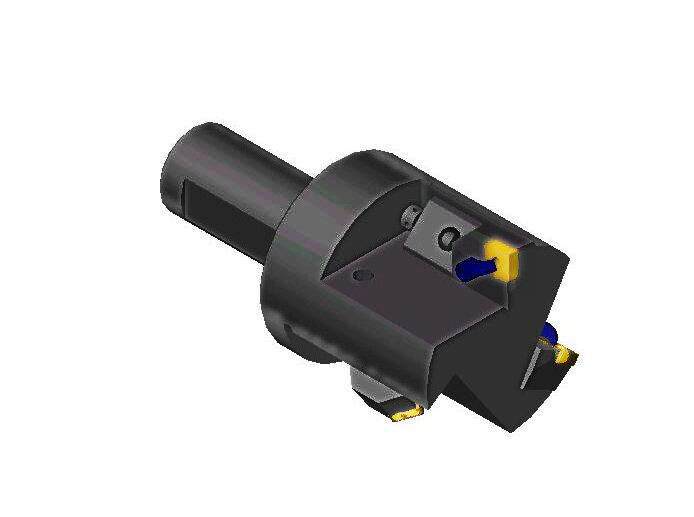
Tailor Made Combination Boring Bar — 03
Combination boring configuration engineered for SPM tooling stations with multiple operations in one pass.

Tailor Made Combination Boring Bar — 04
Custom boring tool variant built to a customer drawing, with insert geometry matched to their existing brand.
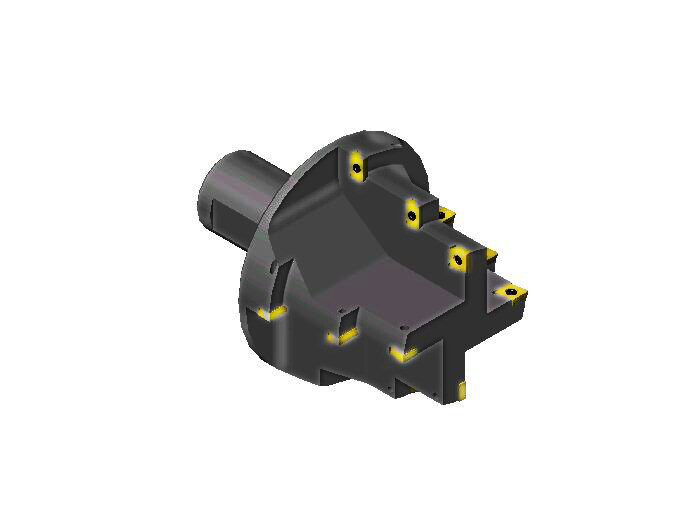
Tailor Made Combination Boring Bar — 05
Combination tooling configuration built for turning centers, combining roughing and finishing edges in one tool.